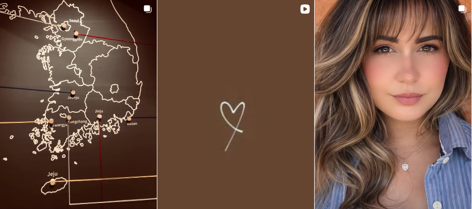

O presente projeto teve como finalidade o desenvolvimento de um site institucional voltado ao estudo das cores, abordando sua importância na percepção visual, na comnicação e na experiência humana. Ao longo do trabalho foram explorados conceitos teóricos relacionados à Teoria da Cor, bem como suas aplicações práticas em àreas como Arquitetura, Design e Tecnologia, além de reflexões sobre acessibilidade visual e inclusão.
Destaca-se ainda que este projeto apresenta um marco importante na trajetória da autora Eryka Lima, que sempre teve uma forte relação com as cores, embora esta seja a primeira vez em que o tema é abordado de forma estruturada e aprofundada. O site torna-se, portanto, um meio de materializar experiências que antes eram apenas intuitivas e pessoais, transformando-as em conhecimento organizado e acessível.
Eryka Lima é apresentada no projeto The Colors como uma autora com visão e propósito, que soube trnasformar momentos difíceis em oportunidades de recomeço. Sua trajetória revela uma mulher que enfrentou um período em que sua vida parecia "cinza", mas que decidiu mudar essa realidade ao buscar novos caminhos, tanto no âmbito pessoal quanto espiritual. Ao aceitar JESUS, Eryka passou a enxergar sua vida sib uma nova perspectiva, reconhecendo Deus como "pintor" de uma história. Essa transformação espiritual influenciou diretamente sua forma de ver o mundo e também sua produção criativa, dando um novo significado às cores, que deixaram de ser apenas elementos visuais e passaram a representar sentimentos, recomeços e identidade.

Assim, conclui-se que o projeto cumpre seu papel ao unir conteúdo teórico, prático de desenvolvimento web e narrativa pessoal, reforçando a ideia de que as cores são uma linguagem viva, presente em todas as dimensões da vida. Mais do que um estudo técnico, este trabalho representa um processo de autoconhecimento e expressões, no qual as cores se tornam não apenas objeto de estudo, mas também parte essencial da identidade da autora.
E AGORA, VOCÊ É O CONVIDADO HÁ EXPLORAR ESSE CONTEÚDO! VAMOS LÁ!! CADASTRE-SE OU FAÇA O LOGIN.